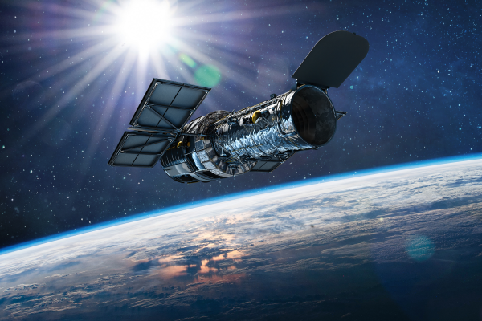
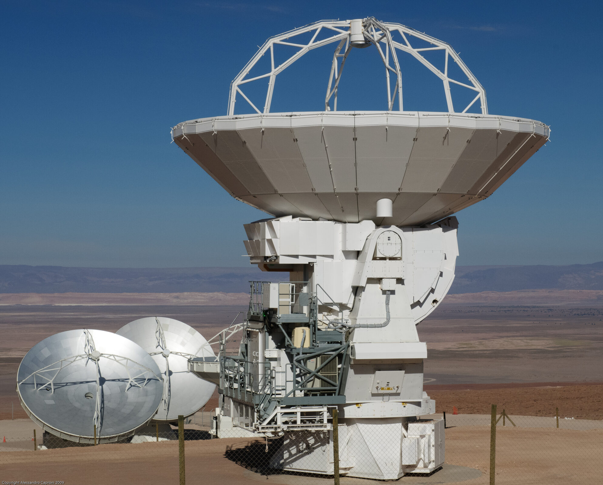

📡 АРХІВ ОПТИЧНИХ ТА РАДІОСИСТЕМ
Клікніть на зображення телескопа, щоб роздивитися деталі конструкції антени чи дзеркала.

James Webb (JWST)
Працює в інфрачервоному діапазоні. Його головна фішка — позолочене дзеркало з 18 сегментів.

Hubble Space Telescope
Стара добра класика. Знаходиться на орбіті з 1990 року і досі передає унікальні дані.

Система ALMA
Радіоінтерферометр, що складається з 66 радіотелескопів. Ідеально для вивчення холодного газу.